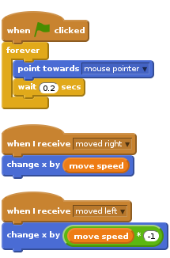

Activity Checklist
You can give your monster eyes that follow your mouse pointer all over the screen. Your monster can have as many eyes as you like, even eight like a spider! Because we always want our monster eyes to follow our mouse pointer we need to use the
foreverblock. Once green flag scripts have started weforeverwant our eyes to point in the direction of the mouse and re-adjust every fraction of a second.
Notice we also use broadcast to move our eyes along with our body and other parts. What else can you make the eyes do? If you move your mouse cursor between your monster’s eyes, it will go cross eyed!